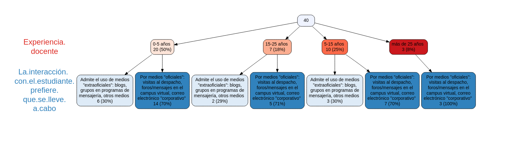

Chatbots en educación
@jjmerelo
,
Arquitectura y Tecnología de Computadores, UGR.
IX convocatoria de actividades de formación docente en centros, titulaciones y departamentos
Docente en UGR desde 1988
No se enseña, se aprende
¿Cómo se enseña?

... Igual que se hacía hace 20 años